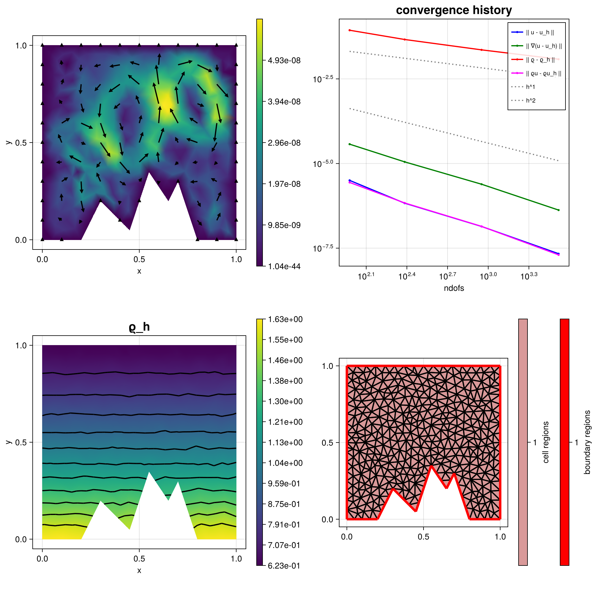

280 : Compressible Stokes
This example solves the two-dimensional compressible Stokes equations where one seeks a (vector-valued) velocity $\mathbf{u}$, a density $\varrho$ and a pressure $p$ such that
\[\begin{aligned} - \mu \Delta \mathbf{u} + \lambda \nabla(\mathrm{div}(\mathbf{u})) + \nabla p & = \mathbf{f} + \varrho \mathbf{g}\\ \mathrm{div}(\varrho \mathbf{u}) & = 0\\ p & = eos(\varrho)\\ \int_\Omega \varrho \, dx & = M\\ \varrho & \geq 0. \end{aligned}\]
Here, eos $eos$ is some equation of state function that describes the dependence of the pressure on the density (and further physical quantities like temperature in a more general setting). Moreover, $\mu$ and $\lambda$ are Lame parameters and $\mathbf{f}$ and $\mathbf{g}$ are given right-hand side data.
There are two testcases. The first testcase solves an analytical toy problem with the prescribed solution
\[\begin{aligned} \mathbf{u}(\mathbf{x}) & =0\\ \varrho(\mathbf{x}) & = \exp(-y/c) \\ p &= eos(\varrho) := c \varrho^\gamma \end{aligned}\]
such that $\mathbf{f} = 0$ and $\mathbf{g}$ nonzero to match the prescribed solution. The second testcase tests an analytical nonzero velocity benchmark problem with the same density.
This example is designed to study the well-balanced property of a discretisation. The gradient-robust discretisation approximates the well-balanced state much better, i.e. has a much smaller L2 velocity error. For larger c (= smaller Mach number) the problem gets more incompressible which reduces the error further as then the right-hand side is a perfect gradient also when evaluated with the (now closer to a constant) discrete density. See reference below for more details.
"A gradient-robust well-balanced scheme for the compressible isothermal Stokes problem",
M. Akbas, T. Gallouet, A. Gassmann, A. Linke and C. Merdon,
Computer Methods in Applied Mechanics and Engineering 367 (2020),
>Journal-Link< >Preprint-Link<
The computed solution for the default parameters looks like this:

module Example280_CompressibleStokes
using ExtendableFEM
using ExtendableGrids
using Triangulate
using SimplexGridFactory
using GridVisualize
using Symbolics
using LinearAlgebra
# everything is wrapped in a main function
# testcase = 1 : well-balanced test (stratified no-flow over mountain)
# testcase = 2 : vortex example (ϱu is div-free p7 vortex)
function main(;
testcase = 1,
nrefs = 4,
M = 1,
c = 1,
ufac = 100,
pressure_stab = 0,
laplacian_in_rhs = false, # for data in example 2
maxsteps = 5000,
target_residual = 1.0e-11,
Plotter = nothing,
reconstruct = true,
μ = 1,
order = 1,
kwargs...
)
# load data for testcase
grid_builder, kernel_gravity!, kernel_rhs!, u!, ∇u!, ϱ!, τfac = load_testcase_data(testcase; laplacian_in_rhs = laplacian_in_rhs, M = M, c = c, μ = μ, ufac = ufac)
xgrid = grid_builder(nrefs)
# define unknowns
u = Unknown("u"; name = "velocity", dim = 2)
ϱ = Unknown("ϱ"; name = "density", dim = 1)
p = Unknown("p"; name = "pressure", dim = 1)
# define reconstruction operator
if order == 1
FETypes = [H1BR{2}, L2P0{1}, L2P0{1}]
id_u = reconstruct ? apply(u, Reconstruct{HDIVRT0{2}, Identity}) : id(u)
elseif order == 2
FETypes = [H1P2B{2, 2}, L2P1{1}, L2P1{1}]
id_u = reconstruct ? apply(u, Reconstruct{HDIVRT1{2}, Identity}) : id(u)
end
# define first sub-problem: Stokes equations to solve for velocity u
PD = ProblemDescription("Stokes problem")
assign_unknown!(PD, u)
assign_operator!(PD, BilinearOperator([grad(u)]; factor = μ, store = true, kwargs...))
assign_operator!(PD, LinearOperator([div(u)], [id(ϱ)]; factor = c, kwargs...))
assign_operator!(PD, HomogeneousBoundaryData(u; regions = 1:4, kwargs...))
if kernel_rhs! !== nothing
assign_operator!(PD, LinearOperator(kernel_rhs!, [id_u]; factor = 1, store = true, bonus_quadorder = 3 * order, kwargs...))
end
assign_operator!(PD, LinearOperator(kernel_gravity!, [id_u], [id(ϱ)]; factor = 1, bonus_quadorder = 3 * order, kwargs...))
# FVM for continuity equation
τ = μ / (order^2 * M * sqrt(τfac)) # time step for pseudo timestepping
@info "timestep = $τ"
PDT = ProblemDescription("continuity equation")
assign_unknown!(PDT, ϱ)
if order > 1
assign_operator!(PDT, BilinearOperator(kernel_continuity!, [grad(ϱ)], [id(ϱ)], [id(u)]; quadorder = 2 * order, factor = -1, kwargs...))
end
if pressure_stab > 0
psf = pressure_stab #* xgrid[CellVolumes][1]
assign_operator!(PDT, BilinearOperator(stab_kernel!, [jump(id(ϱ))], [jump(id(ϱ))], [id(u)]; entities = ON_IFACES, factor = psf, kwargs...))
end
assign_operator!(PDT, BilinearOperator([id(ϱ)]; quadorder = 2 * (order - 1), factor = 1 / τ, store = true, kwargs...))
assign_operator!(PDT, LinearOperator([id(ϱ)], [id(ϱ)]; quadorder = 2 * (order - 1), factor = 1 / τ, kwargs...))
assign_operator!(PDT, BilinearOperatorDG(kernel_upwind!, [jump(id(ϱ))], [this(id(ϱ)), other(id(ϱ))], [id(u)]; quadorder = order + 1, entities = ON_IFACES, kwargs...))
# prepare error calculation
EnergyIntegrator = ItemIntegrator(energy_kernel!, [id(u)]; resultdim = 1, quadorder = 2 * (order + 1), kwargs...)
ErrorIntegratorExact = ItemIntegrator(exact_error!(u!, ∇u!, ϱ!), [id(u), grad(u), id(ϱ)]; resultdim = 9, quadorder = 2 * (order + 1), kwargs...)
NDofs = zeros(Int, nrefs)
Results = zeros(Float64, nrefs, 5)
sol = nothing
xgrid = nothing
op_upwind = 0
for lvl in 1:nrefs
xgrid = grid_builder(lvl)
@show xgrid
FES = [FESpace{FETypes[j]}(xgrid) for j in 1:3]
sol = FEVector(FES; tags = [u, ϱ, p])
# initial guess
fill!(sol[ϱ], M)
interpolate!(sol[u], u!)
interpolate!(sol[ϱ], ϱ!)
NDofs[lvl] = length(sol.entries)
# solve the two problems iteratively [1] >> [2] >> [1] >> [2] ...
SC1 = SolverConfiguration(PD; init = sol, maxiterations = 1, target_residual = target_residual, constant_matrix = true, kwargs...)
SC2 = SolverConfiguration(PDT; init = sol, maxiterations = 1, target_residual = target_residual, kwargs...)
sol, nits = iterate_until_stationarity([SC1, SC2]; energy_integrator = EnergyIntegrator, maxsteps = maxsteps, init = sol, kwargs...)
# calculate error
error = evaluate(ErrorIntegratorExact, sol)
Results[lvl, 1] = sqrt(sum(view(error, 1, :)) + sum(view(error, 2, :)))
Results[lvl, 2] = sqrt(sum(view(error, 3, :)) + sum(view(error, 4, :)) + sum(view(error, 5, :)) + sum(view(error, 6, :)))
Results[lvl, 3] = sqrt(sum(view(error, 7, :)))
Results[lvl, 4] = sqrt(sum(view(error, 8, :)) + sum(view(error, 9, :)))
Results[lvl, 5] = nits
# print results
print_convergencehistory(NDofs[1:lvl], Results[1:lvl, :]; X_to_h = X -> X .^ (-1 / 2), ylabels = ["|| u - u_h ||", "|| ∇(u - u_h) ||", "|| ϱ - ϱ_h ||", "|| ϱu - ϱu_h ||", "#its"], xlabel = "ndof")
end
# plot
plt = GridVisualizer(; Plotter = Plotter, layout = (2, 2), clear = true, size = (1000, 1000))
scalarplot!(plt[1, 1], xgrid, view(nodevalues(sol[u]; abs = true), 1, :), levels = 0, colorbarticks = 7)
vectorplot!(plt[1, 1], xgrid, eval_func_bary(PointEvaluator([id(u)], sol)), rasterpoints = 10, clear = false, title = "u_h (abs + quiver)")
scalarplot!(plt[2, 1], xgrid, view(nodevalues(sol[ϱ]), 1, :), levels = 11, title = "ϱ_h")
plot_convergencehistory!(plt[1, 2], NDofs, Results[:, 1:4]; add_h_powers = [order, order + 1], X_to_h = X -> 0.2 * X .^ (-1 / 2), legend = :best, ylabels = ["|| u - u_h ||", "|| ∇(u - u_h) ||", "|| ϱ - ϱ_h ||", "|| ϱu - ϱu_h ||", "#its"])
gridplot!(plt[2, 2], xgrid)
return Results, plt
end
function stab_kernel!(result, p, u, qpinfo)
result[1] = p[1] #*abs(u[1] + u[2])
return nothing
end
# kernel for (uϱ, ∇λ) ON_CELLS in continuity equation
function kernel_continuity!(result, ϱ, u, qpinfo)
result[1] = ϱ[1] * u[1]
result[2] = ϱ[1] * u[2]
return nothing
end
# kernel for (u⋅n ϱ^upw, λ) ON_IFACES in continuity equation
function kernel_upwind!(result, input, u, qpinfo)
flux = dot(u, qpinfo.normal) # u * n
return if flux > 0
result[1] = input[1] * flux # rho_left * flux
else
result[1] = input[2] * flux # rho_righ * flux
end
end
# kernel for exact error calculation
function exact_error!(u!, ∇u!, ϱ!)
return function closure(result, u, qpinfo)
u!(view(result, 1:2), qpinfo)
∇u!(view(result, 3:6), qpinfo)
ϱ!(view(result, 7), qpinfo)
result[8] = result[1] * result[7]
result[9] = result[2] * result[7]
view(result, 1:7) .-= u
result[8] -= u[1] * u[7]
result[9] -= u[2] * u[7]
return result .= result .^ 2
end
end
# kernel for gravity term in testcase 1
function standard_gravity!(result, ϱ, qpinfo)
result[1] = 0
result[2] = -ϱ[1]
return nothing
end
function energy_kernel!(result, u, qpinfo)
result[1] = dot(u, u) / 2
return nothing
end
function load_testcase_data(testcase::Int = 1; laplacian_in_rhs = true, M = 1, c = 1, μ = 1, ufac = 100)
if testcase == 1
grid_builder = (nref) -> simplexgrid(
Triangulate;
points = [0 0; 0.2 0; 0.3 0.2; 0.45 0.05; 0.55 0.35; 0.65 0.2; 0.7 0.3; 0.8 0; 1 0; 1 1 ; 0 1]',
bfaces = [1 2; 2 3; 3 4; 4 5; 5 6; 6 7; 7 8; 8 9; 9 10; 10 11; 11 1]',
bfaceregions = ones(Int, 11),
regionpoints = [0.5 0.5;]',
regionnumbers = [1],
regionvolumes = [4.0^-(nref) / 2]
)
xgrid = grid_builder(3)
u1!(result, qpinfo) = (fill!(result, 0);)
∇u1!(result, qpinfo) = (fill!(result, 0);)
M_exact = integrate(xgrid, ON_CELLS, (result, qpinfo) -> (result[1] = exp(-qpinfo.x[2] / c) / M;), 1; quadorder = 20)
area = sum(xgrid[CellVolumes])
ϱ1!(result, qpinfo) = (result[1] = exp(-qpinfo.x[2] / c) / (M_exact / area);)
return grid_builder, standard_gravity!, nothing, u1!, ∇u1!, ϱ1!, 1
elseif testcase == 2
grid_builder = (nref) -> simplexgrid(
Triangulate;
points = [0 0; 1 0; 1 1 ; 0 1]',
bfaces = [1 2; 2 3; 3 4; 4 1]',
bfaceregions = ones(Int, 4),
regionpoints = [0.5 0.5;]',
regionnumbers = [1],
regionvolumes = [4.0^-(nref)]
)
xgrid = grid_builder(3)
M_exact = integrate(xgrid, ON_CELLS, (result, qpinfo) -> (result[1] = exp(-qpinfo.x[1]^3 / (3 * c));), 1; quadorder = 20)
ϱ_eval, g_eval, f_eval, u_eval, ∇u_eval = prepare_data!(; laplacian_in_rhs = laplacian_in_rhs, M = M_exact, c = c, μ = μ, ufac = ufac)
ϱ2!(result, qpinfo) = (result[1] = ϱ_eval(qpinfo.x[1], qpinfo.x[2]);)
M_exact = integrate(xgrid, ON_CELLS, ϱ2!, 1)
area = sum(xgrid[CellVolumes])
function kernel_gravity!(result, input, qpinfo)
g_eval(result, qpinfo.x[1], qpinfo.x[2])
return result .*= input[1]
end
function kernel_rhs!(result, qpinfo)
return f_eval(result, qpinfo.x[1], qpinfo.x[2])
end
u2!(result, qpinfo) = (u_eval(result, qpinfo.x[1], qpinfo.x[2]);)
∇u2!(result, qpinfo) = (∇u_eval(result, qpinfo.x[1], qpinfo.x[2]);)
return grid_builder, kernel_gravity!, f_eval === nothing ? nothing : kernel_rhs!, u2!, ∇u2!, ϱ2!, ufac
end
end
# exact data for testcase 2 computed by Symbolics
function prepare_data!(; M = 1, c = 1, μ = 1, ufac = 100, laplacian_in_rhs = true)
@variables x y
# density
ϱ = exp(-x^3 / (3 * c)) / M
# stream function ξ
# sucht that ϱu = curl ξ
ξ = x^2 * y^2 * (x - 1)^2 * (y - 1)^2 * ufac
∇ξ = Symbolics.gradient(ξ, [x, y])
# velocity u = curl ξ / ϱ
u = [-∇ξ[2], ∇ξ[1]] ./ ϱ
# gradient of velocity
∇u = Symbolics.jacobian(u, [x, y])
∇u_reshaped = [∇u[1, 1], ∇u[1, 2], ∇u[2, 1], ∇u[2, 2]]
# Laplacian
Δu = [
(Symbolics.gradient(∇u[1, 1], [x]) + Symbolics.gradient(∇u[1, 2], [y]))[1],
(Symbolics.gradient(∇u[2, 1], [x]) + Symbolics.gradient(∇u[2, 2], [y]))[1],
]
# gravity ϱg = - Δu + ϱ∇log(ϱ)
if laplacian_in_rhs
f = - μ * Δu
g = c * Symbolics.gradient(log(ϱ), [x, y])
else
g = - μ * Δu / ϱ + c * Symbolics.gradient(log(ϱ), [x, y])
f = 0
end
#Δu = Symbolics.derivative(∇u[1,1], [x]) + Symbolics.derivative(∇u[2,2], [y])
ϱ_eval = build_function(ϱ, x, y, expression = Val{false})
u_eval = build_function(u, x, y, expression = Val{false})
∇u_eval = build_function(∇u_reshaped, x, y, expression = Val{false})
g_eval = build_function(g, x, y, expression = Val{false})
f_eval = build_function(f, x, y, expression = Val{false})
return ϱ_eval, g_eval[2], f == 0 ? nothing : f_eval[2], u_eval[2], ∇u_eval[2]
end
endThis page was generated using Literate.jl.